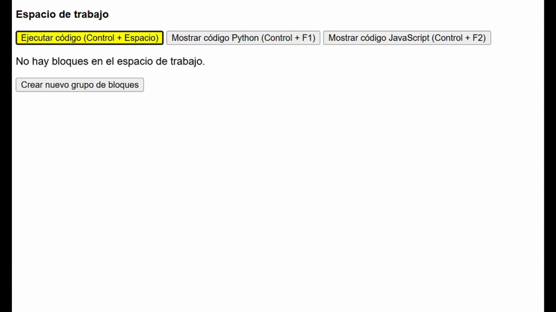
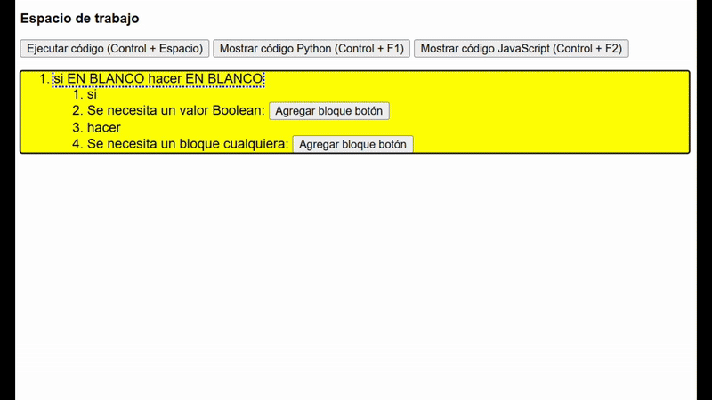
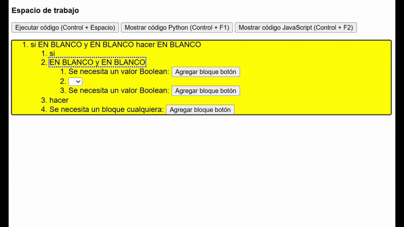
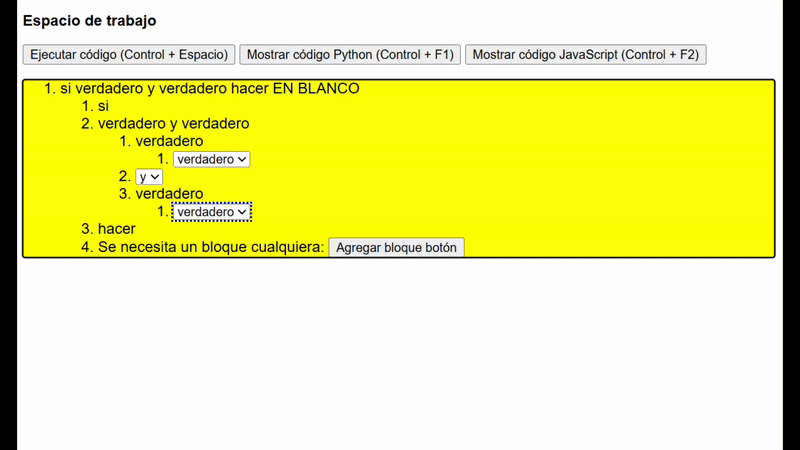
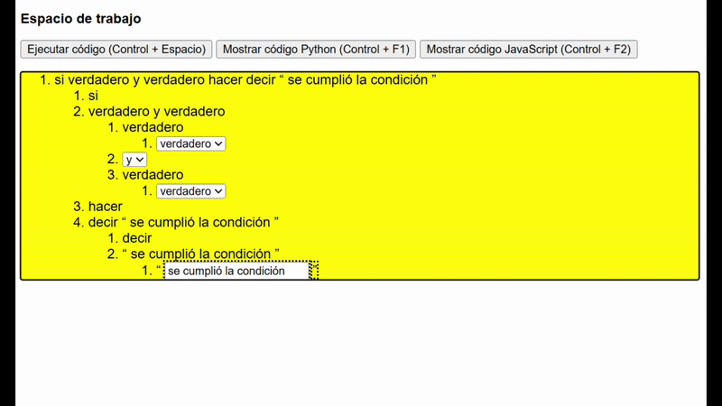

¡Bienvenido al tutorial 2.4 de Accessible Blockly!
Esta es una nueva ventana del navegador, si quieres cambiar de ventana puedes presionar Alt + Tab, y si quieres cerrar esta ventana puedes presionar Control + W.
Recuerda que los pasos deben realizarse en la ventana anterior llamada "Tutorial Blockly", por lo que te recomendamos que tengas ambas ventanas
abiertas para que puedas seguir las instrucciones.
En el tutorial anterior aprendimos a crear un programa que te decía si un número era par o impar.
En este tutorial aprenderemos un nuevo concepto: las puertas lógicas. Este concepto es muy importante, porque es aplicable a todos los lenguajes de programación.
Para comenzar con el tutorial debemos seguir los siguientes pasos:
- Al igual que en el tutorial anterior, debemos crear el bloque de lógica llamado "si EN BLANCO hacer EN BLANCO".

- Luego, al primer espacio en blanco del bloque de lógica, le agregamos el bloque de lógica "EN BLANCO y EN BLANCO".
Quedando como bloque final "si EN BLANCO y EN BLANCO hacer EN BLANCO".

- Dentro de los 2 primeros espacios en blanco debemos colocar el bloque de lógica "verdadero".
Quedando como bloque final "si verdadero y verdadero hacer EN BLANCO".

- Ahora debemos colocar el bloque de texto "decir 'abc'" en el espacio en blanco restante y modificar el texto por "se cumplió la condición" o por lo que queramos.
Quedando como bloque final "si verdadero y verdadero hacer decir 'se cumplió la condición'".

- Ahora es importante entender cómo funcionan las puertas lógicas. Quizás esta sea una explicación muy larga, pero creeme que es muy importante.
Las puertas lógicas son bloques que nos permiten comparar 2 valores y obtener un resultado. Existen varios tipos de puertas lógicas, pero utilizaremos las 2 más importantes: "y" y "o".
La puerta lógica "y" nos permite comparar 2 valores y obtener un resultado. Si ambos valores son verdaderos, el resultado será verdadero. Si uno de los valores es falso, el resultado será falso.
Por otro lado, la puerta lógica "o" nos permite comparar 2 valores y obtener un resultado. Si ambos valores son falsos, el resultado será falso. Si uno de los valores es verdadero, el resultado será verdadero.
- Para entender mejor esto, te invito que pruebes todas las combinaciones de verdaderos y falsos en las 2 puertas lógicas "y" y "o" y veas cuál es el resultado y su traducción a código Python y JavaScript.

- Si realizaste las pruebas, ahora entederás de mejor manera las puertas lógicas y cómo funcionan. Este concepto es muy utilizado en programación, por lo que es muy importante que lo entiendas.
Te invitamos a seguir aprendiendo con el siguiente tutorial, el cual es una tarea para que puedas practicar lo aprendido.
Pero antes no te olvides de cerrar esta ventana presionando Control + W.